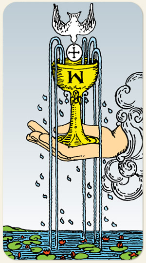

A abundância emocional, o despertar intuitivo e a comunhão. Representa a taça que transborda, indicando que há energia emocional suficiente para nutrir a si mesmo e aos outros. É a carta da paz, da empatia e da conexão espiritual profunda, marcando o início de uma fase de clareza nos sentimentos.
O princípio mais a receptividade, reativo, um sentimento que nasce.
Positivo: Nostalgia, sentimento bom, alegria, encanto, forte simpatia, algo sendo ofertado ao mundo, pequenos agrados, o início de relacionamentos.
Negativo: Manifestação de maus sentimentos, ainda que não sejam profundos. Ofertas que não são feitas de bom grado, dádivas que foram negligenciadas ou negadas, pequenas mágoas e rancores.
Símbolos: Taça, Mão Saindo da Nuvem, Pomba Branca, Flor de Lótus, Número Cinco, Yods, Águas Calmas.
Cores: Azul, Amarelo, Branco. .